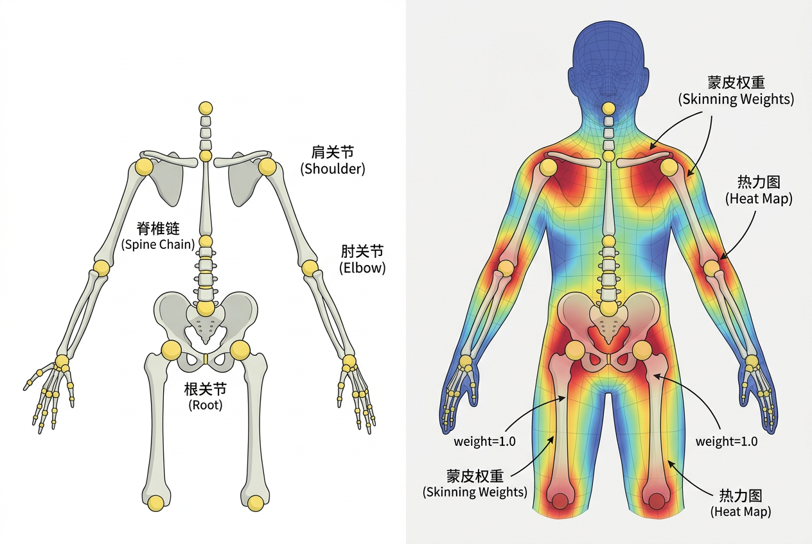

本讲义基于 Steve Marschner & Peter Shirley 所著《虎书》（Fundamentals of Computer Graphics）第5版第16章（p.447-478）计算机动画。
动画原理十二原则、关键帧插值（线性/Catmull-Rom/Hermite/TCB）、LBS蒙皮、Fk/IK、物理模拟（质点弹簧/Boids/L系统/粒子）。
本版插画采用 Guizang 材质插画风格重新绘制。
动画（Animation）一词源自拉丁语anima，意为"赋予生命、兴趣、精神、运动或活力的行为、过程或结果"。运动是生命的一项定义性属性，而动画的真正艺术在于如何通过运动来讲述故事、表达情感、甚至传达人类性格的微妙细节。计算机是实现这些目标的辅助工具——它让娴熟的动画师能够更高效地获得所需结果，而不必纠缠于他们不感兴趣的技术细节。没有计算机参与的动画如今常被称为"传统"动画，它拥有悠久而丰富的历史，至今仍有数以百计的从业者在这门艺术中持续书写新篇章。与任何成熟领域一样，一些久经考验的规则已经结晶出来，它们对如何做好某些事、什么应该避免提供高层次指导。这些传统动画的原则同样适用于计算机动画，我们将在本章讨论其中的一部分。
然而，计算机不仅仅是工具。除了减轻动画师主要工作的繁琐程度，计算机还增添了一些以往根本无法获得或极难实现的独特能力。现代建模工具使得创建精细三维模型相对容易，渲染算法可以产生从完全照片级真实到高度风格化的广泛视觉表现，强大的数值模拟算法可以辅助生成那些特别难以手动动画的物体的基于物理的运动，运动捕捉系统则赋予了记录和使用真实运动的能力。这些进步使计算机动画技术在电影和广告、汽车设计和建筑、医学和科学研究等众多领域得到爆发性应用。全新的领域和应用也纷纷出现，包括全计算机动画的长片电影、虚拟/增强现实系统，当然还有计算机游戏。
本书其他章节更直接地涵盖了上述许多发展（例如几何建模和渲染）。本章仅对直接用于创建和操控运动的技术和算法提供一个概览。具体而言，我们区分并简要描述四种主要的计算机动画方法：
本章完全不涉及该领域的艺术层面。总的来说，我们对用计算机创造运动这个迷人主题的探讨只能是蜻蜓点水。希望真正对此课题感兴趣的读者能将他们的探索远远延伸到本章材料之外。

生活类比：想象你在书的右下角画了一个火柴人，每页的姿势略有不同。当你快速翻页时，火柴人看起来就像在跑动。这就是动画最原始的魔术——用一组静态画面欺骗眼睛，让人脑将它们连接成连续的运动。计算机动画不过是用数学和代码取代了画笔和翻页，但背后的心理物理学原理从未改变。
John Lasseter在其1987年具有开创性的SIGGRAPH论文中将迪士尼工作室传统动画师早在20世纪30年代就发展出的关键原则引入了当时还处于萌芽阶段的计算机动画社区。文中提到了12条原则：挤压与拉伸（squash and stretch）、时间控制（timing）、预备动作（anticipation）、跟随与重叠动作（follow through and overlapping action）、缓入缓出（slow-in and slow-out）、舞台化（staging）、弧线运动（arcs）、次级动作（secondary action）、逐帧画法与关键帧画法（straight-ahead and pose-to-pose action）、夸张（exaggeration）、立体造型（solid drawing skill）和吸引力（appeal）。将近二十年过去了，这些经过时间检验的规则——能够决定一个动画是自然而具娱乐性的，还是机械而乏味的——仍然一如既往地重要。对于计算机动画而言，除此之外，在给予动画师控制力和灵活性与充分利用计算机能力之间取得平衡也非常关键。虽然这些原则广为人知，但在实践中给予它们多大关注则受到许多因素的影响。一位从事长片电影制作的角色动画师可能会花很多时间努力遵循其中一些建议（例如将他的时间控制调整到恰到好处），而许多游戏设计师则倾向于认为他们的时间应该花在其他地方。
时间控制，即动作的速度，是任何动画的核心。事情发生的速度影响着动作的含义、情感状态、甚至所涉及物体的感知重量。同一个动作——角色头部从左转到右——取决于其速度，可以表达从被重物击中后的反应，到在书架上慢慢找书，再到伸展颈部肌肉等各种含义。为手头的具体动作设置适当的时间至关重要。动作应占据足够的时间以便被注意到，同时又要避免过慢而导致乏味的运动。对于包含录音的计算机动画项目，声音提供了一个自然的时间锚点来遵循。事实上，在大多数制作中，演员的声音最先录制，然后完整的动画被同步到这段录音上。由于大而重的物体（更精确地说，加速度较小）倾向于比小而轻的物体移动更慢，时间控制可以用来传达关于物体重量的重要信息。
想一想：为什么时间控制能传达"重量感"？根据牛顿第二定律 F=ma，同样大小的力作用在不同质量物体上产生不同加速度。人脑通过观察加速度反推质量——这是物理直觉在动画中的心理映射。动画师可以通过精确控制动作的加速度来"欺骗"观众，让一个实际上没有质量的数字模型看起来像大理石雕像或气球。
生活类比：一位好的魔术师知道如何引导观众的注意力——在你盯着他挥动的左手时，他的右手已经完成了关键动作。动画中的舞台化（staging）就是同样的道理：通过对动作、构图和时间的精心编排，无声地告诉观众"现在看这里……现在看那里"。
在动画的任何时刻，观众都应该清楚正在呈现什么内容（动作、情绪、表情）。好的舞台化（staging），即对动作的高层规划，应该引导观众的眼睛看向当前重要动作集中的位置，在不使用任何语言的情况下有效地告诉观众"看这个，现在，看那个"。对人类感知的熟悉可以帮助我们完成这个困难的任务。由于人类视觉系统主要对刺激的相对变化而非绝对值做出反应，在静止环境中突然出现的运动，或者在繁忙场景的某一部分缺乏运动，都会自然地吸引注意力。同一个动作如果呈现为物体的轮廓在变化，往往比正面布置更容易被注意到（参见原书Figure 16.1左下）。
在稍低的层次上，每个动作可以被分解为三个部分：预备（anticipation，动作的准备）、动作本身（the action itself）和跟随（follow-through，动作的终止）。在很多情况下，动作本身是最短的部分，从某种意义上说是最不有趣的部分。例如，踢足球可能涉及踢球者大量的预备动作和对飞离足球的长时间"视线追踪"，有充足的机会来展现该时刻的紧张、踢球者的情绪状态，甚至是对动作预期结果的反应。而动作本身（腿部踢球的运动）相当平淡，只占不到一秒的时间。
预备动作的目标是让观众为即将发生的事情做好准备。当动作本身非常快时，这一点尤为重要——如果观众没有提前预判到，快速的运动可能在他们感知中被遗漏。同样，跟随动作对次级附属物（如头发）尤为重要——这些附属物的运动跟随主导部分（头部）。头部的运动可能非常简单，但会导致头发本身产生非平凡的跟随行为。在这种情况下，没有跟随阶段和重叠动作，就不可能创建自然的动画。
20世纪30年代，迪士尼动画师Ollie Johnston和Frank Thomas总结出12条动画基本原则（12 Principles of Animation）。Lasseter将其引入CG领域后，它们至今仍是动画师的金科玉律。以下逐一展开：
1. 挤压与拉伸（Squash & Stretch）——物体在运动过程中发生可逆变形。弹跳的球落地时压扁（squash），弹起时拉长（stretch），体积大致保持恒定。这赋予物体弹性和重量感。数学实现见16.1.4小节。
2. 预备动作（Anticipation）——在主要动作之前先做相反方向的小幅度动作。跳之前先下蹲，出拳之前先收拳。预备为观众提供心理准备，使主要动作更可读。预备动作的量可以传达接下来动作的规模和速度——角色越蜷缩，随后动作被感知的速度越快。
3. 舞台化（Staging）——通过构图、光照和姿态清晰传达动作意图和情感状态。这也是16.1.2中"动作布局"在更高层面的体现。
4. 逐帧画法与关键帧画法（Straight Ahead Action & Pose to Pose）——两种不同策略。"逐帧"从第一帧起依次绘制，动作自然但易失控；"关键帧"先画关键姿态再补中间帧。这是16.2节关键帧动画的思想前身。
5. 跟随与重叠动作（Follow Through & Overlapping Action）——物体不同部分的运动不同步。角色停止奔跑时头发和衣角继续摆动（跟随）；行走时手臂和腿部存在相位差（重叠）。16.1.2中已详细讨论。
6. 缓入缓出（Slow In & Slow Out）——物体不会瞬间达到最大速度或突然停止。启动时加速（缓出），停止前减速（缓入）。数学上用非线性映射函数 f: [0,1]→[0,1] 实现——详见16.2.5小节。
想一想：如果一辆动画中的汽车以恒定速度从A点开到B点，观众会觉得它"不自然"。但实际的公路视频中，汽车往往也以接近匀速行驶。为什么我们仍然觉得匀速运动"假"？因为人的视觉系统对被观看对象的运动预期不仅来自物理真实，也来自对"意图"和"重量"的无意识解读。有质量的物体不可能瞬时改变速度——这正是缓入缓出的物理根源。
7. 弧线运动（Arcs）——自然界绝大多数运动沿弧线而非直线。手臂摆动、头部转动、甚至眼球移动，都描述优美弧线。机械化的直线运动是"机器人感"的最大来源之一。
8. 次级动作（Secondary Action）——在主要动作上叠加较小辅助动作来丰富角色性格。如走路的人同时吹口哨。次级动作不应分散对主要动作的注意力。
9. 时间控制（Timing）——帧数决定动作速度和含义。同样一个"伸手"动作，6帧完成显得急促紧张，20帧则显得犹豫或温柔。详见16.1.1的详细论述。
10. 夸张（Exaggeration）——动画不是复制现实，而是提炼和放大。适度夸张使姿势更清晰、情感更鲜明。在CG中可表达为关节旋转角度放大、挤压拉伸幅度增强或blend shape权重超常偏移。
11. 立体造型（Solid Drawing）——即使在二维中，角色也应具三维体积感。在3D CG中自然满足，但姿态设计和轮廓清晰度仍是评估品质的关键。
12. 吸引力（Appeal）——角色必须具视觉魅力。这不等于"漂亮"——丑陋的反派也可以极具吸引力。吸引力来自鲜明形状设计、清晰轮廓和可辨识的个性特征。
想一想：这12条原则中，哪些可以直接翻译为数学公式或算法？（挤压拉伸、缓入缓出、弧线运动都可用参数曲线或变形函数表达）哪些只能依靠审美判断？计算机能在多大程度上"自动化"这些原则？人工智能能否学习"什么是好的预备动作"？
挤压与拉伸（Squash & Stretch）是最具标志性的动画原则，也是有明确数学表达式的原则之一。其核心思想：物体在变形过程中保持体积（或面积）大致不变。
生活类比：将一个橡皮球砸向地面——接触瞬间球体被压扁变宽，反弹时又被拉长变窄。全过程体积几乎不变。这就是挤压与拉伸的物理本质：用形状的暂时改变来传达弹性和重量，而不改变物体"本身的大小"。
设变形矩阵为对角矩阵 S = diag(s_x, s_y, s_z)，变换前后体积关系：
V_stretched = det(S) · V_initial = s_x · s_y · s_z · V_initial
因此体积守恒条件为 det(S) = s_x · s_y · s_z = 1。典型场景：
球体弹跳：沿y轴压缩因子 s_y = 0.6，则：
k · 0.6 · k = 1 ⇒ k² = 1/0.6 ⇒ k = 1/√0.6 ≈ 1.291
水平方向均匀拉伸约29%。
2D角色：面积守恒 s_x · s_y = 1。若蹲下时高度压缩到0.7倍，宽度扩展为 s_x = 1/0.7 ≈ 1.429（加宽约43%）。
深度思考：严格体积守恒并不总是可取。橡皮球和棉花团从1米落下，变形幅度截然不同。这说明：（1）不同材质的挤压拉伸程度不同，可用"弹性系数"控制；（2）适度主动压缩体积（落地瞬间体积缩小10-20%）可以制造更强冲击感。这种"故意的错误"正是动画师的秘密武器。
变形围绕变形中心 C 发生（通常为质心或接触点）：
v' = C + S · (v − C)
缩放因子随时间变化。典型的弹跳球动画中，压缩-拉伸沿y轴随时间振荡并衰减：
s_y(t) = 1 + A · sin(2πft) · exp(−λt)
其中 A 是最大变形幅度，f 是弹跳频率，λ 是衰减系数。在高空中（sin(2πft)>0）球被拉长，在触地瞬间（sin(2πft)接近极小值）球被压扁。
缓入缓出的本质是对时间的非线性映射——一个从 [0, 1] 到 [0, 1] 的函数 f(t)，满足 f(0) = 0, f(1) = 1，且一阶导数在端点的行为决定动画的"速度感"。
现代动画系统普遍采用三次贝塞尔曲线参数化缓动函数。四个控制点：P₀ = (0, 0), P₁ = (x₁, y₁), P₂ = (x₂, y₂), P₃ = (1, 1)：
B(u) = (1−u)³·P₀ + 3(1−u)²u·P₁ + 3(1−u)u²·P₂ + u³·P₃, u ∈ [0, 1]
常见预设参数：
| 缓动类型 | cubic-bezier 参数 | 行为描述 |
|---|---|---|
| linear | cubic-bezier(0, 0, 1, 1) | 匀速，f(t)=t |
| ease | cubic-bezier(0.25, 0.1, 0.25, 1) | 先加速后减速，CSS默认 |
| ease-in | cubic-bezier(0.42, 0, 1, 1) | 开始缓慢末尾快速 |
| ease-out | cubic-bezier(0, 0, 0.58, 1) | 开始快速末尾缓慢 |
| ease-in-out | cubic-bezier(0.42, 0, 0.58, 1) | 两端慢中间快 |
缓动函数的一阶导数 f'(t) 代表瞬时速度。从物理角度看，缓入对应正加速度，缓出对应负加速度。任何有质量的物体都无法瞬时改变速度——好的缓动曲线实际上在模拟一个有质量物体的启动和停止过程。
设计洞察：iOS的Spring动画使用基于物理的阻尼振荡模型（过冲+回弹），Android的Material Design使用标准缓出曲线和强调减速曲线。两种设计哲学反映了对"自然"的不同理解——iOS追求有机物理感，Android追求清晰一致的节奏感。动画曲线设计本质上是一种"品牌运动语言"。
生活类比：关键帧就像翻页动画中的"关键页"——你只需画出第1页（起跳）、第10页（最高点）和第20页（落地），中间过渡页由助手填充。在计算机动画中，"助手"是一条插值曲线，根据你设置的关键帧自动生成所有中间帧。你的工作是"定义关键时刻"，计算机负责"填满时间"。
在任何给定时刻，被动画化的3D场景由一组数字来指定：所有物体中心的位置、它们的RGB颜色、每个物体沿各轴的缩放量、复杂物体各部分之间的建模变换、相机位置和朝向、光源强度等。要动画化一个场景，这些值中的某个子集必须随时间改变。当然可以为每一帧直接设置这些值，但这并不会特别高效。退而求其次的方法是：沿着动画时间轴为每个参数选择一些重要时间点（关键帧 t_k），并仅为这些选定的帧设置该参数的值（关键值 f_k）。我们将关键帧和关键值的组合 (t_k, f_k) 称为一个键（Key）。
不同参数的关键帧不必相同，但同时对至少一些参数设置关键帧通常是合理的。例如，为某个物体的x、y、z坐标选择的关键帧可能被设置在完全相同的帧上，形成一个单一的位置向量键 (t_k, p_k)。但这些关键帧可能与为物体朝向或颜色选择的那些完全不同。关键帧之间的间距越近，动画师对结果的控制力越强，但设置更多键的工作量成本也必须权衡。因此，通常在动作相对简单的部分使用较大的键间距，在动作复杂的区间集中键（如图16.4所示）。
一旦动画师设置了键 (t_k, f_k)，系统必须为所有其他帧计算 f 的值。虽然我们最终只关心离散帧值，但将其视为一个经典的插值问题——拟合一条连续的动画曲线 f(t) 通过给定的数据点集合（图16.5）——是方便的。曲线拟合算法的广泛讨论见第15章，此处不再重复。由于动画师最初只提供键而不提供导数（切线），能够直接从键计算出所有必要信息的方法更适合动画领域。参数沿曲线的变化速度由曲线对时间的导数 df/dt 给出。因此，为避免突然的速度跳变，通常需要 C¹ 连续性。更高的连续阶在动画曲线中通常不需要，因为二阶导数（对应加速度或施加的力）在现实世界中可以经历非常突然的变化（如球击中硬墙），而更高阶导数不直接对应任何物理运动参数。这些考虑使Catmull-Rom样条成为初始动画曲线创建的最佳选择之一。
最简单的插值是线性插值（lerp）：
v(t) = v₀ + (v₁ - v₀) · (t - t₀) / (t₁ - t₀)
线性插值的缺陷在于关键帧处的速度不连续——造成突兀的"冲击感"。
Catmull-Rom样条是动画中最常用的三次插值曲线。给定四个连续控制点 P₀, P₁, P₂, P₃，在 P₁ 和 P₂ 之间产生C¹连续的三次曲线段，且曲线通过每一个控制点。其矩阵形式的参数方程为：
C(t) = 0.5 · [1 t t² t³] · M_CR · [P₀ P₁ P₂ P₃]ᵀ
其中 Catmull-Rom 基矩阵 M_CR：
[ 0 2 0 0 ]
[-1 0 1 0 ]
M = [ 2 -5 4 -1 ]
[-1 3 -3 1 ]
t ∈ [0, 1] 对应于 P₁ 到 P₂ 之间的弧段。
Catmull-Rom的优势在于：动画师不需要指定切线方向，曲线自动在控制点处保持C¹光滑。内部键 (t_k, f_k) 处的入切线和出切线相等，由相邻键的差分计算：
T_in_k = T_out_k = (1/(2Δt)) · (f_{k+1} − f_k) + (1/(2Δt)) · (f_k − f_{k−1})
Hermite插值提供比Catmull-Rom更高的控制力。给定两个端点 P₀, P₁ 及端点处的切线向量 m₀, m₁：
H(t) = h₀₀(t)·P₀ + h₁₀(t)·m₀ + h₀₁(t)·P₁ + h₁₁(t)·m₁ 其中 Hermite 基函数： h₀₀(t) = 2t³ − 3t² + 1 （P₀ 的权重函数） h₁₀(t) = t³ − 2t² + t （m₀ 的权重函数） h₀₁(t) = −2t³ + 3t² （P₁ 的权重函数） h₁₁(t) = t³ − t² （m₁ 的权重函数） 边界条件验证：H(0) = P₀, H(1) = P₁, H'(0) = m₀, H'(1) = m₁
H(t) = [1 t t² t³] · M_H · [P₀ P₁ m₀ m₁]ᵀ
Hermite 基矩阵 M_H：
[ 1 0 0 0 ]
[ 0 0 1 0 ]
M_H = [-3 3 -2 -1 ]
[ 2 -2 1 1 ]
Hermite插值的关键优势：动画师可以独立控制每个关键帧处的切线方向和强度，从而精确塑造运动曲线——急转弯、平滑过渡、或弹性回弹都能通过调整切线手柄直观实现。
Cardinal样条是Hermite插值的一种特殊形式，其中切线由相邻控制点自动计算，通过一个张力参数 τ（通常取值在 [0, 1] 区间）来控制曲线的松紧程度。给定四个连续控制点 P_{k−1}, P_k, P_{k+1}, P_{k+2}，在 P_k 和 P_{k+1} 之间的切线为：
m_k = (1 − τ) · (P_{k+1} − P_{k−1}) / 2
m_{k+1} = (1 − τ) · (P_{k+2} − P_k) / 2
当 τ = 0 时：切线最大，曲线最松弛（最弯曲），等价于 Catmull-Rom 样条
当 τ = 1 时：切线为零，曲线退化为连接控制点的折线段
Cardinal样条的矩阵形式直接由Hermite矩阵导出：
P_{Cardinal}(t) = [1 t t² t³] · M_C · [P_{k−1} P_k P_{k+1} P_{k+2}]ᵀ
M_C = 0.5 · [ 0 2 0 0 ]
[−s 0 s 0 ]
[ 2s s−3 3−2s −s ]
[−s 2−s s−2 s ]
其中 s = 1 − τ 为松弛参数
当 τ = 0.5（即 s = 0.5）时，得到经典的Catmull-Rom样条矩阵。Cardinal样条是连接Catmull-Rom（完全自动切线）和Hermite（完全手动切线）的桥梁——张力参数提供了平滑度和控制力之间的连续调节。
想一想：Catmull-Rom样条天然通过所有控制点，这看起来很好——但它也可能导致"过冲"（overshoot）。若四个控制点近似共线但第三个略微偏离，Catmull-Rom路径会向偏离方向多摆一段。在相机动画中这可能造成灾难。Hermite通过调整切线强度可以抑制或增强过冲。Cardinal样条的张力参数恰好提供了一种折衷——增大张力减小过冲但牺牲平滑度。
| 插值方式 | 连续性 | 控制点通过 | 切线控制 | 曲线特点 | 适用场景 |
|---|---|---|---|---|---|
| 线性 | C⁰连续（速度跳变） | 所有点 | 不可控 | 折线段，机械僵硬 | 机械运动模拟、反风格表达 |
| Catmull-Rom | C¹连续 | 所有点 | 自动计算 | 平滑，可能过冲 | 相机路径、一般运动路径 |
| Cardinal | C¹连续 | 所有点 | 张力参数τ调节 | CR到折线的连续过渡 | 需平衡平滑和控制的场景 |
| Hermite | C¹连续 | 端点通过 | 完全手动 | 最灵活：平滑/急转/回环 | 角色关键帧、精确节奏控制 |
大多数动画系统为动画师提供了对初始曲线进行交互精细编辑的能力，包括插入更多键、调整已有键、或修改自动计算的切线。另一种有助于微调曲线形状的有用技术称为TCB控制（TCB代表张力Tension、连续性Continuity和偏置Bias）。其思想是引入三个新参数，通过对关键帧处入切线和出切线的协调调整来修改曲线在该键附近的形状。
对于时间上均匀分布（相邻间隔为 Δt）的键，标准Catmull-Rom样条在内部键 (t_k, f_k) 处的入切线 T_in 和出切线 T_out 为：
T_in_k = T_out_k = (f_{k+1} − f_k) / (2Δt) + (f_k − f_{k−1}) / (2Δt)
TCB样条的修正切线为：
T_in_k = ((1−t)(1−c)(1+b) / (2Δt)) · (f_{k+1} − f_k)
+ ((1−t)(1+c)(1−b) / (2Δt)) · (f_k − f_{k−1})
T_out_k = ((1−t)(1+c)(1+b) / (2Δt)) · (f_{k+1} − f_k)
+ ((1−t)(1−c)(1−b) / (2Δt)) · (f_k − f_{k−1})
其中 TCB 各参数的含义和效果：
t = 0，范围 [-1, 1]。t<0（低张力）产生更松弛的曲线，t>0（高张力）产生更尖锐的过渡。b 接近 1，产生"超调"动作）或右邻居（b 接近 -1，产生"欠调"动作）的直线。默认值 b = 0。c = 0。实际有用的TCB参数值通常限定在 [-1, 1] 区间，默认 t = c = b = 0 对应原始Catmull-Rom样条。图16.6给出了可能的曲线形状调整示例。
想一想：TCB控制提供了一种对动画曲线进行"雕塑式"微调的方法，而不需要手动编辑切线手柄。它在概念上类似于音频均衡器——三个滑块分别控制不同的"感觉维度"。这种设计比直接编辑切线更直观还是更不直观？对于不熟悉数学的动画师，TCB的三个命名参数（张力/连续性/偏置）比"导数"或"切线"更容易建立直觉联想。
到目前为止，我们描述了如何通过键定位和切线值的精细调整来控制动画曲线的形状。然而，当需要同时控制物体运动的位置（即其路径）和沿此路径的运动速度时，这通常是不够的。给定空间中的一组位置作为键，自动曲线拟合技术可以拟合一条通过这些位置的曲线，但由此产生的运动仅被约束为物体必须在相应关键帧 t_k 到达指定位置 p_k——关于键之间的运动速度没有任何直接规定。
这会带来问题。例如，如果一个物体沿x轴先以11米/秒的速度运动1秒，然后以1米/秒运动9秒，它将在10秒后到达位置 x=20，从而满足动画师的键(0,0)和(10,20)。但这种颠簸的运动极不可能符合动画师的意图，以2米/秒的匀速运动更接近他们设置这些键时的想法。虽然通常不会显示如此极端的行为，但自动拟合的曲线几乎从未产生完全均匀的运动——动画师通常期望在键之间得到这个结果。
解决方案是将空间路径与沿路径的运动速度分离为两个独立的问题。首先，如同之前所做，通过键位置 p_k 拟合一条空间曲线 P(u)。其次，通过键 (t_k, S_k) 拟合一个独立的距离-时间函数 S(t)，其中 S_k 是沿曲线到键 k 的弧长距离。在动画时刻 t 的物体位置则由 P(u(S(t))) 给出，其中 u(S) 是曲线参数 u 与弧长 s 之间的关系，由系统自动建立。动画系统通常为动画师提供交互编辑 s(t) 的工具。
距离-时间函数并非控制运动的唯一方式。在某些情况下，用户指定速度-时间函数 v(t) 甚至加速度-时间函数 a(t) 可能更方便。由于这些分别为 s(t) 的一阶和二阶导数，系统首先通过对用户输入进行积分来恢复距离-时间函数（对 a(t) 需要积分两次）。
曲线参数 u 与弧长 s 之间的关系由系统自动建立。在实践中，系统首先确定弧长对参数 u 的依赖关系（即反函数 s(u)）。使用该函数，对于任何给定距离 S，可以求解方程 s(u) − S = 0 得到 u(S)。对于大多数曲线，s(u) 无法以封闭解析形式表达，需要数值积分（见第14章）。标准的数值求根过程（如Newton-Raphson方法）可直接用于求解。
另一种替代技术是将曲线本身近似为一组线性线段。在足够密集的参数值 u_i 处计算曲线上的点 p_i，然后创建近似弧长的表格（见图16.9）：
s(u_i) ≈ Σ_{j=1}^{i} ‖p_j − p_{j−1}‖ = s(u_{i-1}) + ‖p_i − p_{i-1}‖
由于 s(u) 是 u 的非递减函数，可以通过简单搜索表格来找到包含给定 S 值的区间（图16.9），然后对区间端点处的 u 值进行线性插值最终求得 u(S)。如果需要更高精度，可以以该值作为起始点执行几步Newton-Raphson算法。
缓入缓出的核心思想：不按均匀的时间步长推进参数，而是让时间先"加速"（ease-out）再"减速"（ease-in）。数学上通过对时间参数 t 应用非线性映射函数实现。最常用的三次Hermite平滑函数：
f_ease(t) = −2t³ + 3t² 验证: f(0)=0, f(1)=1, f'(t)=−6t²+6t, f'(0)=f'(1)=0
| 函数名 | 缓入 (easeIn) | 缓出 (easeOut) | 缓入缓出 (easeInOut) |
|---|---|---|---|
| Quadratic | t² |
t(2 − t) |
t<0.5 ? 2t² : −1+(4−2t)t |
| Cubic | t³ |
1 − (1−t)³ |
t<0.5 ? 4t³ : 1−(−2t+2)³/2 |
| Quartic | t⁴ |
1 − (1−t)⁴ |
t<0.5 ? 8t⁴ : 1−(−2t+2)⁴/2 |
| Quintic | t⁵ |
1 − (1−t)⁵ |
t<0.5 ? 16t⁵ : 1−(−2t+2)⁵/2 |
| Sinusoidal | 1 − cos(πt/2) |
sin(πt/2) |
(1 − cos(πt)) / 2 |
| Exponential | 2^(10(t−1)) |
1 − 2^(−10t) |
t<0.5 ? 2^(20t−10)/2 : 1−2^(−20t+10)/2 |
弹性缓出（Elastic Ease-Out）：模拟弹簧的过冲回弹：
f(t) = 1 − 2^(−10t) · cos(2π · b · t) 其中 b 控制回弹频率（通常取 3~5）
回弹缓出（Back Ease-Out）：模拟"过冲然后回来"的动作：
f(t) = 1 + (s+1)·(t−1)³ + s·(t−1)² 其中 s 是"过冲量"参数（通常 1.7） 展开形式：f(t) = 1 + (s+1)(t³−3t²+3t−1) + s(t²−2t+1) 验证：f(0)=0, f(1)=1, f'(0)=0（easeOut），f'(1)可能为负（过冲）
反弹缓出（Bounce Ease-Out）：模拟刚性物体落地的多次反弹：
f(t) = 1 − |sin(2π · n · (1−t))| · exp(−k · (1−t)) 反弹次数 n 和衰减率 k 决定了"材质感"
幂次与运动感：幂次 n 越高，缓动越"极端"——启动/停止越缓慢，中间加速越剧烈。二次（n=2）最温和，对应恒加速度；三次（n=3）广泛用于UI过渡；五次（n=5）适合"迟疑感"表达。
实践建议："入场缓出，出场缓入"——物体从画面外进入时用ease-out（快速进入后减速停稳），离开时用ease-in（逐渐加速远离）。这个原则在UI动效设计中被严格遵守。
上述技术可用于对描述场景的大多数参数进行键的插值。三维旋转是一个重要的运动类型，针对它有更专业的插值方法和表示法。其原因是：将标准技术直接应用于3D旋转常常导致严重的实际问题。旋转（物体朝向的变化）是除平移外唯一保持物体形状完整的运动，因此在刚体动画中扮演特殊角色。
指定物体朝向有多种方式。第一种是使用第6章所述的变换矩阵。但不幸的是，直接对旋转矩阵的元素进行逐个插值几乎一定会产生非旋转矩阵（即不保持正交性），导致物体形状的意外扭曲。
更好的方法是使用四元数（quaternion）表示旋转，并通过球面线性插值（slerp）在两个旋转状态之间进行插值：
slerp(q₀, q₁, t) = (sin((1−t)θ) / sin θ) · q₀ + (sin(tθ) / sin θ) · q₁ 其中 cos θ = q₀ · q₁ （四元数点积，θ是两个四元数之间的夹角）
slerp保证旋转始终沿单位四元数球面上的最短弧（测地线）行进，产生最自然、最高效的旋转过渡。Shoemake (1985)引入了对关键帧旋转四元数使用slerp的思想。更进一步的推广是四元数样条（squad），它将Catmull-Rom的思想推广到了四元数空间：
squad(q_i, q_{i+1}, s_i, s_{i+1}, t) =
slerp(slerp(q_i, q_{i+1}, t), slerp(s_i, s_{i+1}, t), 2t(1−t))
其中 s_i 是辅助四元数，s_i = q_i · exp(−(log(q_i^(−1)·q_{i−1}) + log(q_i^(−1)·q_{i+1})) / 4)
直接将欧拉角的三个分量分别插值在简单场景中看似有效，但会导致两个严重问题：
（1）万向节锁（Gimbal Lock）——当中间旋转轴将另外两轴对齐时，丧失一个旋转自由度。例如在使用Z-Y-X欧拉角（yaw-pitch-roll 顺序，即绕Y→绕X→绕Z）时，当pitch=90°，yaw和roll轴重合，失去区分绕这两轴旋转的能力。四元数在四维空间中表达旋转，从根本上避免了万向节锁。
（2）插值路径不沿最短弧——对欧拉角三个分量分别线性插值，旋转可能绕远路到达目标朝向，而非沿球面上的测地线（最短路径）。
想一想：为什么旋转插值需要专门处理而位置插值不需要？位置是三维欧几里得空间中的点，该空间是线性的——两点的仿射组合仍然是空间中的有效点。而旋转构成了 SO(3) 群，这是一个非线性流形——两个旋转矩阵的线性组合通常不再是有效的旋转矩阵。四元数单位球面 S³ 是 SO(3) 的双重覆盖，slerp 在 S³ 上沿着大圆弧进行，对应 SO(3) 上的最小旋转路径。这一根本区别是整个刚体运动学的数学基础。
虽然物体变形技术可能更适合作为建模工具来讨论，但传统上它们与动画方法一起被论述。改变物体形状的最简单操作大概是非均匀缩放。更一般地，可以对指定物体的所有点的局部坐标应用某个函数（即三角形网格的顶点或样条曲面的控制多边形），重新定位这些点并创建新形状：p' = f(p, γ)，其中 γ 是变形函数使用的参数向量。
选择不同的 f（并通过依次应用将它们组合）可以帮助创建非常有趣的变形。有用简单函数的例子包括弯曲（bend）、扭转（twist）和锥化（taper），如图16.13所示。对这种形状变化进行动画化非常简单——只需对变形函数的参数进行关键帧设置。这种技术的缺点包括：对于某些非标准变形难以选择合适的数学函数，以及由此产生的变形是全局的——整个物体而不仅仅是某部分被重新塑造。
沿某轴对物体进行弯曲，弯曲角度 θ 控制弯曲程度。设弯曲发生在 xz 平面内绕 y 轴的圆柱弯曲：
弯曲半径 r = L / θ，其中 L 为物体沿弯曲方向的长度 绕 y 轴旋转角 = θ · (x / L) （旋转角度沿 x 方向线性变化） 对于物体上点 (x, y, z)，弯曲后： θ_local = θ · x / L x' = r · sin(θ_local) z' = r · (1 − cos(θ_local)) （向中心轴的径向距离减小） y' = y
沿某轴（通常为 y 轴）对物体进行螺旋旋转，旋转角 α 在轴向上线性变化：
x' = x·cos(α·y) − z·sin(α·y) z' = x·sin(α·y) + z·cos(α·y) y' = y
扭转是创建"拧毛巾"效果和螺旋形装饰的基础变形。
沿某轴的缩放因子随位置线性变化，使物体一端粗一端细：
s(y) = s_0 + (s_1 − s_0) · y / L x' = x · s(y) z' = z · s(y)
其中 s_0 和 s_1 分别为底部和顶部的缩放因子，L 为物体沿 y 轴长度。
要对物体进行局部变形同时提供对结果更直接的控制，可以选择单个顶点、将其移动到新位置，然后调整某个邻域内的顶点以跟随这个种子顶点。受变形影响的区域以及物体不同部分的位移量由一个随距离（通常在物体表面上计算）衰减的衰减函数控制。种子顶点的运动可以被关键帧化以产生动画化形状变化。
一种更通用的变形技术称为自由变形（Free-Form Deformation, FFD），由Sederberg和Parry于1986年提出。首先建立一个局部坐标网格（多数情况下为直线网格）来包裹物体待变形的部分，计算所有相关点关于此网格的坐标 (s, t, u)。用户随后自由重塑控制格点 P_ijk 为新的扭曲格 P'_ijk（图16.14）。物体使用在原未扭曲网格中计算的坐标、通过三变量Bézier插值（见第15章）以扭曲后的格点作为控制点来重建：
P(s, u, t) = Σ_{i=0}^{L} C(L,i)·(1−s)^{L−i}·s^i
· Σ_{j=0}^{M} C(M,j)·(1−t)^{M−j}·t^j
· Σ_{k=0}^{N} C(N,k)·(1−u)^{N−k}·u^k · P'_ijk
其中 C(n, k) = n! / (k!·(n−k)!) 为二项式系数
L, M, N 分别为各维度的格点最大索引
实际上，格子在变形目的上充当物体的低分辨率版本，允许对任意复杂物体进行平滑的形状改变。FFD不直接操作物体表面顶点——而是将物体嵌入控制格（lattice）中，通过操纵控制格点间接变形物体。
考虑 2×2 的2D FFD（L=1, M=1，共4个控制点）。Bernstein基函数为线性基 B_0(u)=1−u, B_1(u)=u：
P(s, t) = P_00·(1−s)(1−t) + P_10·s(1−t) + P_01·(1−s)t + P_11·st
这正是双线性插值——四个控制点的加权平均。移动 P_11 会使 (s,t) 接近 (1,1) 的区域被"拉伸"过去。
| 格大小 | 控制点数 | 变形能力 | 典型应用 |
|---|---|---|---|
2×2×2 | 8 | 三线性变形（仿射+锥形） | 全局拉伸、挤压 |
3×3×3 | 27 | 二次弯曲，单峰隆起 | 角色粗略姿态调整 |
4×4×4 | 64 | 三次弯曲，S形曲线 | 面部微调、肌肉隆起 |
5×5×5 | 125 | 四次弯曲，高度局部化 | 精细雕刻、服装适配 |
想一想：FFD基于空间变形而非表面变形——控制格挤压某区域太厉害时，内部不可见结构也会跟着变形。若部分物体落在FFD格之外，Bernstein多项式在 [0,1] 之外不保证有界性和光滑性，外推结果通常不可预测和非物理。为何不直接用B样条基函数替代Bernstein基函数？（答案：这恰好是扩展FFD/EFFD的做法——使用B样条基提供真正的局部控制和任意分辨率的格。）
Morphing是指将一个形状连续光滑地变换为另一个形状。最基本做法是对两幅图像的每对对应像素进行颜色插值（交叉溶解，cross-dissolve）。但纯粹交叉溶解无法处理几何形状改变——猫溶解为汽车时，猫的耳朵会"幽灵般"透过汽车前挡风玻璃浮现。
高质量的Morphing需同时进行几何扭曲（warping）和颜色插值。在源图像和目标图像上建立对应特征点，对源图像施加基于对应关系的扭曲映射使其几何形状对齐到目标图像，再将扭曲后的源图像与目标图像进行交叉溶解。
给定源特征点 {s_i} 和目标特征点 {t_i}，扭曲函数 W: R² → R² 必须满足：
W(s_i) = t_i, ∀i ∈ {1, 2, …, N}
对于非特征点位置，通过径向基函数插值（RBF）确定：
W(x) = Σ_{i=1}^{N} w_i · φ(‖x − s_i‖) + Ax + b
其中 φ(r) 是径向基函数：
· 薄板样条: φ(r) = r² log r （最常用，最小化弯曲能量）
· 高斯: φ(r) = exp(−r²/2σ²)
· 多二次: φ(r) = √(r² + c²)
· 逆多二次: φ(r) = 1/√(r² + c²)
w_i ∈ R² 是待求权重向量
A ∈ R²ˣ² 是全局仿射矩阵
b ∈ R² 是全局平移向量
权重通过求解线性系统确定：
[Φ S^T] [W] [T] [S 0 ] [A^T] = [0] 其中 Φ_ij = φ(‖s_i − s_j‖)，S的每行为 [1, s_i^T] T的每行为 t_i^T，W的每行为 w_i^T
特征点选取原则：覆盖性（均匀覆盖）、显著性（轮廓角点/边缘/纹理分界）、拓扑一致性（避免交叉对应）、数量适度（不足精度不够，过多计算量大）。
目标变形（target morphing / blend shapes）在三维角色动画中广泛应用。为基础网格创建多个"目标形状"（不同表情姿态），运行时按权重混合：
V_result = V_0 + Σ_{i=1}^{k} w_i · ΔV_i, w_i ∈ [0, 1]
其中 V_0 是基础网格（中性姿态）
ΔV_i = V_target,i − V_0 是每个目标形状相对于基础形状的位移向量
w_i 是混合权重（通常由动画师通过滑块控制）
面部动画中通常创建数十甚至数百个blend shapes，每个对应一种基本表情动作。优点是计算高效（只是顶点位置的线性组合），动画师可通过滑块直观操控。缺点是线性组合有时意外产生不自然的"中间形状"——因为线性组合无法表达变形之间的非线性交互。另外，同时激活多个blend shapes可能产生相互抵消的效果（例如"张嘴"+"微笑"可能导致嘴角位置不正确）。
生活类比：抬起手臂这个动作，你的大脑只需要想"手去抓住那个杯子"——这是IK。但力的传导路径是：肩关节旋转→上臂抬起→肘关节旋转→前臂跟随。这一级一级从根到叶的链条就是FK，就像多米诺骨牌：推倒第一块（旋转肩关节），后续各块自动依次倾倒。
角色动画是计算机动画中最复杂也最吸引人的子领域。创建自然外观的运动甚至可以从使用动作"片段"库开始。动画师随后根据角色的物理参数调整通用结果，也赋予其更多个性。
当骨架改变位置时，它作为施加到角色皮肤上的一类特殊变形器。运动通过为每个皮肤顶点分配一个（刚性蒙皮，rigid skinning）或多个（平滑蒙皮，smooth skinning）关节作为驱动器来传递到表面（见图16.20）。
角色的骨架（skeleton）是一个层次化的关节结构。每个关节存储一个相对于其父关节的局部变换（旋转+平移），通常表示为 4×4 齐次变换矩阵。根关节定义角色在世界空间中的整体位置和朝向。
从数据结构角度看，骨架是一棵有根树（rooted tree），每个节点（关节）拥有指向父节点的引用和子节点列表：
结构体 Joint:
Joint* parent // 父关节指针（根关节的 parent = null）
List children // 子关节列表
Matrix4x4 localTransform // 相对父关节的局部变换（绑定姿态下）
Matrix4x4 worldTransform // 世界空间变换（每帧由FK更新）
Vector3 bindPosePos // 绑定姿态下的世界位置（蒙皮所需）
float boneLength // 到子关节的骨骼长度
典型人形骨架层次（HAnim标准部分）：
0: Hips (根) → 1:Spine → 2:Spine1 → 3:Neck → 4:Head
├→ 6:LeftShoulder → 7:LeftArm → 8:LeftForearm → 9:LeftHand
└→ 10:RightShoulder → 11:RightArm → 12:RightForearm → 13:RightHand
→ 14:LeftUpLeg → 15:LeftLeg → 16:LeftFoot
→ 17:RightUpLeg → 18:RightLeg → 19:RightFoot
骨架关键特性：每个关节至多一个父关节（树结构）；从根到任意关节路径唯一；变换仅向下传播——旋转父关节影响所有后代，旋转子关节不影响父关节。
正向运动学（Forward Kinematics, FK）回答的问题是：给定每个关节的旋转角度（或平移量），末端执行器在世界空间中的位置在哪里？
考虑由 n 个关节组成的运动学链，每个关节 j 存储相对于父关节的局部变换矩阵 L_j。关节 j 在世界空间中的变换通过从根到 j 路径上所有局部变换的累积乘积给出：
W_j = L_0 · L_1 · … · L_j 每个关节 j 的局部变换可分解为: L_j = T_j · R_j 其中 T_j 将原点从父关节平移到当前关节位置（骨骼长度） R_j 是关节的旋转矩阵
给定附着在关节 n 上的局部空间顶点 p_local，其世界空间位置为：
p_world = W_n · p_local = L_0 · L_1 · … · L_n · p_local
这就是FK矩阵链累积公式——整个正向运动学的数学核心。对于典型人形骨架（50-80个关节），仅需几十次矩阵乘法，计算代价极低。
2D两段手臂：根关节在原点，上臂长 L₁=2，前臂长 L₂=1.5。关节角度 θ₁=30°（上臂与X轴夹角）、θ₂=45°（前臂与上臂相对夹角）：
L₁ = RotationZ(30°) · TranslationX(2)
W₁ = L₁
L₂ = RotationZ(45°) · TranslationX(1.5)
W₂ = W₁ · L₂
肘位置 = (2·cos30°, 2·sin30°) ≈ (1.732, 1.000)
腕位置 = 肘位置 + (1.5·cos75°, 1.5·sin75°)
≈ (1.732 + 0.388, 1.000 + 1.449) ≈ (2.120, 2.449)
生活类比：FK就像多节台灯臂——依次旋转每个关节，灯的最终位置由所有旋转的累积效果决定。每个关节的调整只影响"下游"部分。这就是FK的最大特点：局部操作，全局后果。
想一想：FK让你精确控制每个关节角度，但要手指尖碰到桌面特定点，需要手动调整从肩到指尖的所有关节。就像用一堆旋钮控制连杆机构末端——可行但不直观。IK就是为解决这个"反问题"而生的。
反向运动学（Inverse Kinematics, IK）解决FK的"反问题"：给定末端执行器在世界空间中的目标位置（和朝向你），求解所有中间关节的旋转角度。这是一个典型的约束优化问题。
生活类比：伸手拿水杯时，你的大脑自动完成了一次IK计算。你不需要有意识地思考"肩关节转多少度、肘关节转多少度"——你只需要"想让手到达那个位置"。这个从目标位置反向求解关节角度的过程，正是IK的核心。就像你拖动一个木偶的指尖，所有线和关节自动调整到合适位置。
CCD（循环坐标下降法）是最简单的IK数值方法。其核心思想：从末端关节开始向根关节方向迭代，每次仅调整一个关节的旋转，使末端执行器尽可能接近目标位置。
算法: CCD IK（单链）
输入: 关节链 joints[0..n-1]（0=根, n-1=末端）
目标位置 target
最大迭代次数 maxIter
for iter = 1 to maxIter:
for k = n-2 down to 0: // 从末端关节的父关节向根遍历
// 计算从关节k到末端执行器的向量
toEndEffector = Normalize(endEffector - joints[k].worldPos)
// 计算从关节k到目标位置的向量
toTarget = Normalize(target - joints[k].worldPos)
// 绕关节k的旋转轴旋转，使 toEndEffector 对齐 toTarget
rotationAxis = Normalize(Cross(toEndEffector, toTarget))
rotationAngle = acos(Dot(toEndEffector, toTarget))
// 如果角度非常小（<阈值 ε），跳过此关节的调整
if abs(rotationAngle) < ε: continue
// 应用旋转到当前关节
joints[k].应用旋转(rotationAxis, rotationAngle)
// 更新FK：重新计算所有后代关节的世界位置
updateFK下链(joints, k)
// 检查是否已足够接近目标
if ‖endEffector − target‖ < tolerance: return SUCCESS
CCD的优点：实现简单、计算快速（每关节仅需一次旋转）、几何直观。缺点：可能产生不自然姿态（关节过度扭曲），收敛可能较慢，只能处理末端位置目标而不能直接处理朝向约束。
更数学化的IK方法基于链的Jacobian矩阵。设 θ = [θ₁, θ₂, …, θ_m]ᵀ 是关节角度向量（m个自由度），x = f(θ) 是末端执行器位置（前向运动学函数）。Jacobian矩阵 J 定义为 f 关于 θ 的偏导数矩阵：
J = ∂f/∂θ, J_ij = ∂x_i / ∂θ_j 对于三维空间中的末端执行器（3个位置坐标）和 m 个关节角度： J 是 3×m 矩阵 微小关节角度变化 Δθ 导致末端位置变化： Δx = J · Δθ
给定期望的末端位移 Δx = x_target − x_current，求解 Δθ。当 m > 3（冗余机械臂，大多数角色关节链），系统欠定（无穷多解）。使用Moore-Penrose伪逆 J⁺ 获得最小范数解：
J⁺ = J^T · (J · J^T)^(−1) （当 J 行满秩时） Δθ = J⁺ · Δx 这个解具有性质：在满足 Δx = J·Δθ 的所有 Δθ 中，‖Δθ‖ 最小 即选择对关节角度"改变最小"的方式来达到目标位置
对于奇异位姿（J·J^T 不可逆），使用阻尼最小二乘（DLS）或称Levenberg-Marquardt方法：
J⁺_damped = J^T · (J · J^T + λ²·I)^(−1) Δθ = J⁺_damped · Δx 其中 λ 是阻尼因子，在奇异位姿附近防止数值爆炸 λ 大 → 接近梯度下降（小步长），λ 小 → 接近伪逆（大步长但可能震荡）
| 特性 | FK 正向运动学 | IK 反向运动学 |
|---|---|---|
| 输入 | 关节角度 θ₁, θ₂, …, θ_n | 末端目标位置 x_target |
| 输出 | 末端位置（唯一确定） | 关节角度（多解/无解） |
| 计算方向 | 根→叶（单向传播） | 叶→根（迭代求解） |
| 复杂度 | O(n) 矩阵乘法 | 迭代，每步O(m³)或O(迭代次数·n) |
| 适用场景 | 走路摆臂、舞蹈动作 | 伸手取物、脚着地约束 |
想一想：真实的角色动画系统几乎总是同时使用FK和IK。例如：角色走路时，手臂摆动用FK（自然周期性），但脚必须精确着地（IK约束）。动画师在时间线上"混合"FK和IK——摆动阶段用FK，足部着地瞬间切换到IK保证接触。这种混合策略正是现代动画系统的精髓。
在刚性蒙皮中，皮肤顶点被简单地冻结到对应关节的局部空间中——空间上最近的关节或用户指定的关节。顶点重复该关节的任何运动，世界坐标位置由标准FK程序确定。刚性蒙皮虽简单，但难以在关节附近获得平滑皮肤变形，也无法处理呼吸或肌肉的细微效果。额外的专门变形器（弯曲器，flexors）可用于此目的。
生活类比：皮影戏是最古老的LBS：用硬质关节驱动柔软的皮影，皮影在关节处的弯曲不是刚性的——它产生了温和的拉伸和皱褶。LBS蒙皮模拟的就是这种"内部骨骼刚性运动 + 表面弹性跟随"的效果。每个皮肤顶点就像皮影上的一点，被多根操纵杆（骨骼）同时拉扯，最终位置是各方拉扯结果的加权折衷。
在平滑蒙皮中，多个关节可根据动画师分配的权重影响一个皮肤顶点。不同关节影响给定皮肤顶点所提议的位移向量 d_i（每个再次通过标准FK计算）根据其权重 w_i 进行平均：
d = Σ_i w_i · d_i 最终顶点位置： v' = Σ_i w_i · M_i · v 其中： v — 顶点在绑定姿态下的原始位置 M_i — 骨骼 i 的蒙皮矩阵: M_i = W_i_current · W_i_bind^(−1) w_i — 顶点受骨骼 i 影响的权重，通常 Σw_i = 1, w_i ≥ 0 v' — 顶点变形后的世界空间位置
归一化权重（Σw_i = 1）最为常见但并非根本必要。设置平滑蒙皮权重以达到期望效果并不容易，需要动画师相当的技巧。实践中每个顶点通常仅受4-8根骨骼影响以提高效率。蒙皮权重由动画师在建模软件中手绘——类似"绘制笔刷"在3D表面涂抹权重值。
LBS的著名缺陷是糖纸效应（candy-wrapper artifact）：关节旋转角较大时（如肘部弯曲超过90°），关节区域顶点因线性混合产生不自然的体积塌陷——像糖纸被拧紧时中间的塌缩。原因是线性混合在旋转角度大时不能保持骨骼段之间的体积。
改进方案：
v' = (Σ_i w_i · DQ_i) · v 其中 DQ_i 是骨骼 i 的双四元数变换（结合旋转和平移） 混合结果需重新归一化：DQ_blend = (Σ w_i·DQ_i) / ‖Σ w_i·DQ_i‖
LBS因简洁和GPU友好性仍是实时应用（如游戏引擎）的事实标准。
想一想：LBS公式 v' = Σ w_i·M_i·v 的简洁性令人难以置信。仅一行公式就描述了现代实时角色动画的核心技术。但正如所有简洁的模型一样，它的局限性也来自这个简洁性——权重是静态的、与姿势无关的。任何改进方案本质上都是引入"姿势感知"（pose-awareness）来超越这"一行公式"的局限。
骨架非常适合创建角色身体的大多数运动，但对逼真的面部动画不太方便。原因在于，人脸皮肤是由直接附着在其上的肌肉驱动的——这与身体其他部位不同，在那里肌肉的主要目标是移动骨骼，皮肤变形只是次要结果。这种面部解剖结构的结果是一组非常丰富的动态面部表情——人类将其作为主要交流工具之一。我们都经过良好训练来识别这些面部变化，很容易注意到任何不自然的外观。这不仅对动画师提出特殊要求，还需要高分辨率的面部几何模型，以及（如果需要照片级真实感）精确的皮肤反射属性和纹理。
虽然可以逐顶点设置面部关键姿态并在其间插值，或使用基于物理的技术（见16.5节）直接模拟下层肌肉结构行为，但更专业的高层方法也存在。
特定面部的静态形状可以通过相对较小的构象参数（conformational parameters）集合来表征——包括整体尺度、从眼睛到额头的距离、鼻子长度、下巴宽度等。这些参数用于将通用面部模型变形为具有个体特征的模型。额外的一组表情参数（expressive parameters）用于描述面部的动态形状以进行动画化。例子包括头部刚性旋转、眼睛睁开程度、特征点从其静态位置的位移等。这些参数被选择为使得大多数有趣的表情可以通过某种参数调整组合来获得，从而允许面部通过标准关键帧进行动画化。
为获得更高层次控制，可用表情参数创建对应常见情绪的表情（中性、悲伤、高兴、愤怒、惊讶等），然后混合这些关键姿态以获得"略微悲伤"或"愤怒地惊讶"的面孔。类似技术可用于唇形同步动画，此时关键姿态对应不同音素（phonemes）。
不使用静态表达序列来描述动态表情，面部动作编码系统（Facial Action Coding System, FACS, Eckman & Friesen 1978）将动态面部表情直接分解为称为动作单元（Action Units, AUs）的基本运动之和。AU集合基于广泛的心理学研究，包括抬起内眉、皱鼻、拉伸嘴唇等动作。组合AU可用于合成所需任意表情。将AU活动映射到3D面部模型的顶点位移上，就能创建符合解剖学原理的逼真面部动画。
想一想：人类对人脸的感知极为敏锐——我们能在零点几秒内识别微表情（micro-expressions）。这使面部动画面临特殊挑战。"恐怖谷"（uncanny valley）效应意味着：当面面动画接近但未完全逼真时，反而比明显卡通风格更让人不适。FACS通过系统化地分解面部运动为可量化的AU单元，试图将"表情"这个看似主观的艺术转化为可计算的参数空间——这是科学与艺术在动画中联姻的绝佳范例。
即使借助上述技术，从头创建逼真的角色动画仍是艰巨任务。因此大量注意力自然被导向记录真实世界中演员动作、然后将这些动作应用到计算机生成角色上的技术。存在两大类运动捕捉（MC）技术：电磁式和光学式。
电磁传感器直接测量其在3D中的位置（及可能朝向），通常实时提供捕捉结果。缺点包括设备成本高、附近金属物体可能造成干扰、传感器和电池的尺寸显著——可能成为执行大幅运动时的障碍。
使用小型彩色标记物替代主动传感器，侵入性小得多。图16.21展示了此类系统的操作。在最基本布局中，运动由两台校准好的摄像机记录，通过简单三角测量提取标记物的3D位置。用于从视频精确跟踪多个标记物的更高级计算机视觉算法计算昂贵，因此在大多数情况下，此类处理离线进行。光学跟踪通常比电磁式更不鲁棒。标记物在某些帧中被遮挡、标记物可能的错误识别、以及图像中的噪声，只是必须解决的常见问题中的几个。引入更多摄像机从不同方向观察运动可同时提高精度和鲁棒性，但这种方法更昂贵且处理时间更长。随着可用计算能力的增加和更好计算机视觉算法的开发，光学MC愈发有吸引力。由于标记物的低侵入性，光学方法适用于精细面部运动捕捉，也可用于人类以外的对象——例如动物甚至风中摇曳的树枝。
多个传感器或标记物附着于表演者身体后，可记录一组点的时间依赖3D位置集合。这些跟踪位置通常选在关节附近但仍在皮肤表面，不在实际骨骼交汇处。因此需要额外关注和一点处理将记录的位置转换为物理骨架关节位置。例如在肘部或脚踝相对两侧各放两个标记物，系统通过平均两个标记物的位置获得更好关节位置。没有这种额外关注，非常明显的伪影可能因偏移关节位置以及固有噪声和测量精度不足而出现。由于运动中的物理不精确性——例如角色四肢失去与应接触物体的接触——骨架脚部滑动（skating）等问题可能发生。这些问题大多可通过IK技术纠正，IK可显式强制肢体末端所需行为。
恢复的关节位置现在可直接应用到计算机生成角色的骨架上。此过程假设角色物理尺寸与表演者相同。将记录的运动重定向（retargeting）到不同角色，以及更一般地编辑MC数据，需要相当谨慎以保持必要约束（如维持脚接地、不让肘部后弯）并保持修改后运动的整体自然外观。一般来说，所需改变偏离原始数据越大，维持质量的可能性越低。一个有趣的解决思路是记录大量运动库，然后从中拼接短片剪辑获得所需运动。虽然此主题是非常活跃的研究领域，但将记录的运动调整到动画师需求的能力有限——这仍是运动捕捉的主要缺点之一。
实践洞察：现代AAA游戏制作中，MC已成为标准管线。典型流程：动作捕捉工作室录制→数据清理（填补遮挡、去噪）→重定向到角色骨骼→动画师在MotionBuilder/Maya中微调→导出引擎。关键挑战在于"死亡之手"效应——纯MC数据缺乏12条原则中的夸张和舞台化。好的动画师在MC数据上叠加"调味层"，恢复被纯记录丢失的艺术品质。
生活类比：关键帧技术是你用手"拖拽"物体到它们该去的位置。基于物理的动画则不同——你告诉计算机"这里有重力、那边有风、这块布料碰到椅子应该弹开"，然后放手让计算机自己算。就像把多米诺骨牌摆好，推倒第一块，看它们怎么倒——你设定了规则和初始条件，结果是"算"出来的而非"画"出来的。
我们周围的世界由物理定律支配，其中许多可被形式化为偏微分方程组（或在简单情况下，常微分方程组）。计算机的原始应用之一就是（且仍然是）求解此类方程。因此很自然地尝试使用过去几十年发展出的数值技术来为CG动画获得真实运动。
由于其相对复杂性和高昂成本，基于物理的动画最常用于其他技术要么不可用、要么无法产生足够真实结果的场景中。主要例子包括流体动画（包含许多由相同方程描述的气相现象——烟雾、云、火等）、布料模拟（图16.22给出了一个例子）、刚体运动以及弹性物体的精确变形。这些不同情况下控制方程和常用数值方法的细节各不相同，但许多基本思想和困难在不同应用中仍然适用。
质点弹簧系统（Mass-Spring System）是物理模拟中最简单也最常用的模型。将物体离散化为多个质点（粒子），质点间用弹簧和阻尼器连接以模拟弹性行为。
一个质点 i 的运动由Newton第二定律描述：
m_i · d²x_i/dt² = F_total,i 其中 m_i 是质点质量，x_i 是位置 总力 F_total 通常包括： · 重力: F_g = m·g · 弹簧力（胡克定律）: F_s = −k_s · (‖Δx‖ − L_rest) · Δx̂ · 阻尼力: F_d = −k_d · (Δv · Δx̂) · Δx̂ · 外力（风、碰撞等）
连接质点 i 和 j 的弹簧产生成对力：
Δx = x_i − x_j, Δv = v_i − v_j, Δx̂ = Δx / ‖Δx‖ F_s,i = −k_s · (‖Δx‖ − L_rest) · Δx̂ （从 j 指向 i 的弹性恢复力） F_s,j = +k_s · (‖Δx‖ − L_rest) · Δx̂ （反作用力，从 i 指向 j） F_d,i = −k_d · (Δv · Δx̂) · Δx̂ （阻尼力，沿弹簧方向） F_d,j = +k_d · (Δv · Δx̂) · Δx̂ 其中 k_s 为弹簧刚度（stiffness），k_d 为阻尼系数，L_rest 为弹簧静止长度
临界阻尼条件：k_d ≈ 2√(k_s·m)——弹簧最快回到平衡位置且不过冲，是大多数动画的首选参数。欠阻尼（k_d 偏小）产生振荡，过阻尼（k_d 偏大）导致缓慢逼近。
布料模拟中的典型弹簧拓扑：
结构弹簧（Structural）——连接直接相邻质点（水平和垂直） 剪切弹簧（Shear）——连接对角线方向质点，抵抗剪切变形 弯曲弹簧（Bend）——连接间隔一个质点的相邻质点，抵抗弯曲变形
这三种弹簧的组合赋予布料抵抗拉伸、剪切和弯曲的能力。
存在许多数值求解ODE和PDE的方法，但详细讨论超出本书范围。为让读者感受基于物理的技术及其涉及的问题，我们仅简要提及有限差分（finite difference）方法——概念上最简单、最流行的算法家族之一，已被应用于动画中遇到的绝大多数（如果不是全部的话）微分方程。
该方法的关键思想是用离散类比——差分方程——替代微分方程。为此，将连续域由一组有限个点表示，解将在这些点上计算。最简单的情况是如图16.23所示的均匀矩形网格。原始ODE或PDE中的每个导数随后被其在网格点处的函数值近似所替代：
时间导数（一阶前向差分）： df/dt ≈ Δf/Δt = [f(t+Δt) − f(t)] / Δt 空间导数（一阶前向差分）： ∂f/∂x ≈ Δf/Δx = [f(x+Δx, t) − f(x, t)] / Δx （式 16.2）
这些表达式当然不是唯一方式。例如可以用 f(t−Δt) 替代上面的 f(t) 并除以 2Δt（中心差分，精度O(Δt²)）：
中心差分（更高精度，O(Δt²)）： df/dt ≈ [f(t+Δt) − f(t−Δt)] / (2Δt) 二阶导数（中心差分，O(Δx²)）： ∂²f/∂x² ≈ [f(x+Δx) − 2f(x) + f(x−Δx)] / Δx²
对于包含时间导数的方程，可通过求解关于未知 f(t+Δt) 的差分方程组（每个空间位置一个方程），以一序列 Δt 步长将未知函数的值在时间上向前传播。需要初始条件来启动该过程。
如果使用前一时间步已知值计算空间导数，得到的方程可直接解出下一时间步的值。以一维热传导方程为例：
∂f/∂t = α · ∂²f/∂x²
显式FTCS格式（前向时间、中心空间）：
f_i^{n+1} = f_i^n + (α·Δt/Δx²) · (f_{i+1}^n − 2f_i^n + f_{i-1}^n)
其中 f_i^n = f(x_i, t^n)，所有右侧项在 n 时刻（当前时间步）已知
这种格式简单直接，但存在稳定性约束：时间步长必须满足 Δt ≤ Δx²/(2α)。超过此限时，数值误差呈指数增长，计算变得毫无意义。这就是显式格式的根本折衷：简单但步长受限。
如果在 t+Δt 处评估空间导数，则得到一个需求解的耦合方程组：
隐式离散化（后向时间、中心空间）：
−r·f_{i−1}^{n+1} + (1+2r)·f_i^{n+1} − r·f_{i+1}^{n+1} = f_i^n
其中 r = α·Δt/Δx²
需要在每个时间步求解一个三对角线性系统
隐式格式无条件稳定——可使用任意大的时间步长而不会爆炸。代价是每个时间步需求解代数方程组。
| 特性 | 显式格式 | 隐式格式 |
|---|---|---|
| 每步计算量 | 低（直接计算） | 高（需解线性系统） |
| 稳定性 | 条件稳定（Δt有上限） | 无条件稳定 |
| 步长限制 | 严格（CFL条件） | 无（精度限制除外） |
| 实现复杂度 | 简单 | 较复杂 |
| 适用场景 | 快速动力学、实时布料模拟 | 准静态问题、离线高质量模拟 |
一般来说，显式格式要么不稳定，要么在大步长时可能变得不稳定；隐式格式无条件稳定。隐式格式允许更大步长（因此更少步数），这就是它们尽管每个步长需求解代数方程组却仍然受欢迎的原因。显式格式因为简单而具吸引力——如果它们的稳定性条件能满足的话。为特定问题开发好的差分格式和对应算法并不容易，对大多数标准情况强烈建议使用已有方法。关于这些技术细节的充分文献是可获得的。
想一想：显式 vs 隐式——这是数值模拟中最基本的选择。类比：下山。显式方法每次只根据当前坡度决定下一步（可能掉下悬崖），隐式方法先"预览"下一步的地形再做决定（安全但慢）。在动画中，实时应用的"黄金法则"：使用显式+小步长保证每帧计算时间可预测；离线渲染则多用隐式+大步长追求精度。
应记住的是，在许多情况下，仅仅计算方程中所有必要项本身就是一项困难且耗时的任务。在刚体或布料模拟中，作用于系统的大多数力是由于物体之间的碰撞。在动画的每一步，必须解决一个纯几何但非常非平凡的碰撞检测（collision detection）问题。在此类条件下，需要较少评估这些力的格式可提供显著计算节省。
虽然求解适当的时变方程给出了非常真实的运动，但这种方法也有其局限性。首先，很难控制结果——方程的基本数学性质指出，一旦设置初始条件，解是唯一定义的。这为动画师留下的空间不多。如果结果不满意，选择大多局限于：调整初始条件、改变系统物理性质、甚至通过引入旨在"驱动"解向期望方向发展的人工项来修改方程本身。进行此类改变需要相当技巧以及对底层物理和理想情况下数值方法的理解。没有这些知识，基于物理动画提供的真实感可能被破坏，或可能出现严重数值问题。
想一想：基于物理的动画产生"正确"结果，但动画师常常需要"不正确的正确"——如角色被风吹起时的夸张动画。如何在物理精确性和艺术控制之间取得平衡？这是CG研究中最持久的问题之一。一种活跃的解决方案是"物理约束+艺术目标"——将动画师提供的关键帧作为物理模拟的软约束，在求解物理方程的同时最小化与参考运动之间的偏差。
想象可以编写（并在计算机上实现）一个数学函数，在给定动画师引导的条件下精确输出期望运动。上述基于物理的技术可看作这种方法的一个特例——此时"函数"是求解特定微分方程的过程，"引导"是初始条件和边界条件、额外方程项等的集合。
然而，如果只关心最终结果，不必遵循基于物理的方法。例如，湖面上的简单恒定振幅波浪可直接通过用函数 f(x, t) = A cos(ωt − kx + φ) 在时间 t 获取2D点 x 处的位移来创建，该函数具有恒定频率 ω、波向量 k 和相位 φ。一组具有随机相位和适当选择振幅、频率和波向量的此类波浪，可以产生非常逼真的水面动画，而无需显式求解任何流体动力学方程。事实证明其他相当简单的数学函数也可以创建非常有趣的图案或物体。第11.5节描述了几种此类函数，大多数基于格点噪声。为这些函数添加时间依赖性使我们能够以比基于物理技术更简单、更便宜的方式动画化某些复杂现象，同时保持结果的极高视觉质量。
粒子系统（particle systems, Reeves 1983）模拟大量小型独立实体的行为。每个粒子拥有属性（位置、速度、寿命、颜色、大小等），按规则随时间演化。生命周期：发射→演化→消亡。
生活类比：节日烟花是完美的粒子系统物理演示——每个粒子（火星）从爆炸中心发射，受重力和空气阻力独立飞行，在夜空中画出无数发光的抛物线轨迹。计算机粒子系统的数学内核完全一样：发射→受力飞行→逐渐褪色→消亡。
每帧更新的核心是显式欧拉积分：
算法: 粒子更新循环（Euler方法）
for each particle p:
F_total = m·g + F_wind + F_drag + F_turbulence + F_other
a = F_total / m
p.velocity = p.velocity + a · Δt // 式: v(t+Δt) = v(t) + a(t)·Δt
p.position = p.position + p.velocity · Δt // 式: x(t+Δt) = x(t) + v(t)·Δt
p.age = p.age + Δt
p.alpha = 1 − (p.age / p.maxLifetime)
if p.age >= p.maxLifetime: respawnOrRemove(p)
常见作用力：
重力: F = m · (0, −9.8, 0)
粘性阻尼: F = −k_d · v
涡旋力: F = k_v · cross(axis, p − center)
风/湍流: F = k_w · perlinNoise3D(p.x, p.y, t) (叠加Perlin噪声)
粒子属性生命周期变化:
颜色: color(t) = lerp(color_start, color_end, t/lifetime)
透明度: alpha(t) = 1 − (t/lifetime) (线性淡出)
alpha(t) = 1 − (t/lifetime)² (二次淡出)
大小: size(t) = size_start · (1 − t/lifetime) + size_end · t/lifetime
粒子系统的威力在于涌现行为：数千个遵循简单规则的独立粒子可产生火焰、烟雾、爆炸、瀑布、火花、魔法效果等极其复杂的视觉效果。在实时图形应用中，粒子系统通常实现在GPU上（几何/计算着色器），粒子状态存储在GPU内存中，使数十万粒子的模拟和渲染可在毫秒级完成。
想一想：为什么粒子系统用欧拉积分而非更精确的Runge-Kutta方法？答案在于"速度>精度"——粒子通常不可交互（玩家不能去撞一颗火星）、寿命短暂（1-3秒）、数量巨大（成千上万）。在此条件下，每增加一次力评估（RK4需4次）代价远超精度提升的收益。粒子系统是"近似够用就是最优"哲学的完美体现。
第11.5节中描述的基于格点噪声的函数可被赋予时间依赖性，从而以更简易的方式动画化复杂现象。如果 noise(x) 是底层图案生成函数，可通过在格点中移动参数位置来创建其时间依赖性变体。最简单的是恒定速度运动：
timenoise(x, t) = noise(x + v·t)
更复杂的运动路径（如螺旋，见图16.25）可用于产生随时间演化的漩涡状图案。另一种方法是动画化噪声函数的参数——这在外观随时间显著变化时特别适用，如云变得越来越湍流。通过这种方式，可以使用生成静态云的函数来动画化云的形成过程。
函数 perlinNoise2D(x, y):
x0 = floor(x); x1 = x0 + 1
y0 = floor(y); y1 = y0 + 1
sx = x − x0; sy = y − y0
// 四个格点的伪随机梯度向量 & 点积贡献值
g00 = gradient(x0, y0); n00 = dot(g00, (sx, sy))
g10 = gradient(x1, y0); n10 = dot(g10, (sx−1, sy))
g01 = gradient(x0, y1); n01 = dot(g01, (sx, sy−1))
g11 = gradient(x1, y1); n11 = dot(g11, (sx−1, sy−1))
// 缓动函数平滑插值: fade(t) = 6t⁵ − 15t⁴ + 10t³
u = fade(sx); v = fade(sy)
nx0 = lerp(n00, n10, u); nx1 = lerp(n01, n11, u)
return lerp(nx0, nx1, v)
fade(t) = 6t⁵ − 15t⁴ + 10t³ 的一阶和二阶导数在端点处均为零（fade'(0) = fade'(1) = 0 且 fade''(0) = fade''(1) = 0），确保噪声的二阶连续性。
分形布朗运动通过叠加多个不同频率和振幅的噪声层来模拟多尺度结构：
fBm(x, y, octaves) = Σ_{k=0}^{octaves−1} persistence^k · noise(lacunarity^k · x, lacunarity^k · y)
典型参数: lacunarity≈2.0, persistence≈0.5, octaves=4~8
lacunarity 控制频率倍增（每octave间距）
persistence 控制振幅衰减（每octave衰减因子）
| 应用 | 维度 | 参数 | 效果 |
|---|---|---|---|
| 火焰扰动 | 3D/4D (x,y,z,t) | 高频 octaves=6-8 | 叠加粒子竖直速度，产生随机爆裂感 |
| 水面 | 3D (x,z,t) | 低频主浪+高频涟漪 | 大浪平滑，表面反射闪烁密集 |
| 草地摇摆 | 2D (x,t) | 低频+风向偏置 | 整体偏向+每根草相位不同的抖动 |
| 摄像机抖动 | 1D(t)×6DOF | 中频，z振幅| 自然手持感 | |
| 呼吸微动 | 1D(t) | 正弦+高频噪声 | 基础正弦叠加不规则呼吸感 |
想一想：Perlin噪声是确定性算法——相同输入永远输出相同值，但看起来随机。为什么这种"可重复的随机性"在动画中至关重要？重新渲染某镜头时噪声必须保持一致，否则会出现闪烁或不连续。这就是程序化技术的最大优势之一：你得到"伪随机的可重复性"——外观有机随机，但结果完全可重现。
对于某些程序化技术，时间依赖性是更内在的组成部分。最简单的元胞自动机（cellular automata）操作在2D矩形网格上，每个位置（元胞）存储一个二进制值。为创建随时间变化的图案，反复应用用户提供的修改规则，规则通常涉及元胞当前值和邻居值的条件。
由英国数学家John Conway于1970年发明的著名2D生命游戏（Game of Life）元胞自动机规则如下：
一旦规则施加到所有网格位置，新图案被创建，可开始新的演化周期。图16.26展示了不同时刻活细胞分布的三个样本快照。更复杂的元胞自动机同时对多个可能具有浮点值的3D网格操作，可用于对云和其他气体现象或生物系统的动力学进行建模——该装置最初正是为此发明的（注意术语）。
从几条精心选择的规则可产生令人惊讶的图案复杂性，但如何编写此类规则以创建期望行为常常并不明显。这是程序化技术的常见问题：关于创建新过程或调整已有过程参数只有有限（如果有的话）指导。因此通常需要通过试错（"凭经验"）大量微调和学习来解锁程序化方法的全部潜力。
另一种最初为描述生物对象而发展并同样令人感兴趣的方法是称为L-systems的技术（以最初发明者Astrid Lindenmayer命名）。这种方法基于文法（grammars）——用于改写符号字符串的递归规则集合。
存在两种符号：终结符（terminal symbols）代表我们希望用文法表示的事物的元素。根据含义，文法可描述树木和灌木的结构、建筑和整个城市、或编程和自然语言。在动画中，L-systems最常用于表示植物，对应终结符是发给几何建模系统的指令：在当前位置放置一片叶子（或分支）——我们将使用符号 @ 并仅画一个圆；将当前位置向前移动若干单位（符号 f）；将当前方向绕世界Z轴旋转60度（符号 +）；压入（符号 [）或弹出（符号 ]）当前位置朝向等。
辅助非终结符（nonterminal symbols，大写字母）只有语义含义而非任何直接含义。它们旨在最终通过终结符被改写。我们从特殊非终结起始符号 S 开始，以并行方式持续对当前字符串应用文法规则——同时替换所有当前存在的非终结符以得到新字符串，直到最终只含终结符，无法再替换。然后使用该建模指令字符串输出实际几何体。
例如，一组规则（产生式）：
S → A A → [+B]fA A → B B → fB B → f@
可能产生以下改写序列（图16.27展示了推导步骤）：
S → A → [+B]fA → [+fB]f[+B]fA → [+ff@]f[+fB]fB → [+ff@]f[+ff@]ff@
如上所示，同一个非终结符通常有许多不同产生式，允许用相同文法生成许多不同物体。选择哪条规则可取决于被替换符号旁边的符号（上下文敏感），或按概率随机执行——每条规则分配一定概率（随机L-systems）。更复杂的规则可对与环境交互进行建模（如修剪为特定形状），参数可与符号关联控制发出的几何指令。
L-systems已捕捉随时间变化的植物拓扑：每个在改写过程中获得的中间字符串可被解释为植物"更年轻"版本（见图16.27）。对于更显著的变化，可在不同时间使用不同产生式——年轻树产生许多新枝，而老树分枝仅适度。使用L-systems已创建出非常逼真的植物模型。但与大多数程序化技术一样，需要一些经验才能有意义地应用已有L-systems，编写新文法捕捉某些期望效果肯定不容易。
想一想：L-systems的精妙在于简单规则产生复杂结构——几条重写规则就能"长"出枝繁叶茂的大树。这种"涌现"思想与Boids模型高度一致。你能找到日常生活中其他"简单规则→复杂全局行为"的例子吗？（蚁群觅食、城市交通流、社交媒体上的病毒传播都是）
要动画化多个物体，当然可对每个物体单独应用本章前述标准技术。对于数量适中且期望运动提前已知的独立物体，这工作良好。然而，对于自然界中常见的大量物体（鸟群、鱼群、人群），直接手动设置运动是不切实际的。此外，此类群体中个体之间的互动——尤其是避碰——是群体运动不可分割的部分，且极大影响着最终外观。所有这些都是手动动画化非常困难（即使不是完全不可能）的。
群集模拟鸟群、鱼群或人群的集体运动。Craig Reynolds在1987年提出的Boids模型是经典基础。
在物理层面，每个boid基于质量和作用于其上的力计算其自身运动。首先存在全局期望速度，通过Newton定律计算：
F_new = (v_desired − v_current) / Δt v_new = v_current + (F_new / m) · Δt
其次，boid应对外部环境和其他群体成员的行为做出反应。避碰是此类互动的主要结果之一。对群集至关重要的特征是：每个群体成员只有有限视野，因此只感知当前位置邻域内发生的事情。为避开环境物体，最简单（尽管不完美）策略是在每个此类物体周围设置有限范围的排斥力场。这将创建第二个期望速度向量 v_col_avoid_new，同样由Newton定律给出。
与群体其他成员的互动通过同时施加不同的转向行为来建模，产生几个额外的期望速度向量 v_steer_new。最常用的是：
1. 分离（Separation）——远离邻居以避免拥挤：
a_sep,i = w_sep · Σ_{j∈N_i} (p_i − p_j) / ‖p_i − p_j‖²
2. 对齐（Alignment）——调整速度以匹配邻居平均航向：
a_ali,i = w_ali · (v_avg,i − v_i)
其中 v_avg,i = (1/|N_i|)·Σ_{j∈N_i} v_j （邻居速度的算术平均）
3. 聚合（Cohesion）——朝邻居中心转向以确保凝聚：
a_coh,i = w_coh · (c_avg,i − p_i)
其中 c_avg,i = (1/|N_i|)·Σ_{j∈N_i} p_j （邻居位置的算术平均）
最后，通常还施加额外期望速度向量 v_goal_new 来实现所需的全局目标。这些可以是沿空间中某条路径的向量、跟随群体中某个指定的领导者、或仅仅代表群体成员的迁徙冲动。
一旦所有 v_new 被确定，最终期望向量根据优先级协商决定。避碰和速度匹配通常具更高优先级。关键的，不采用期望速度向量的简单平均——那样可能导致冲动的相互抵消和"哪儿也不去"的不自然行为。取而代之的是加速分配策略：
每个boid有一定总量的可用加速度 A_max
按优先级顺序对每个冲动（urge）分配加速度的子份额：
A_remaining = A_max
for each urge u in orderedUrges (by priority):
allocated = min(A_remaining, |a_u|)
应用 a_u 在 allocated / |a_u| 的缩放比例
A_remaining -= allocated
if A_remaining <= 0: break
如果总可用加速度耗尽，某些低优先级冲动将对运动产生较小影响或完全被忽略。希望是：一旦当前最重要的任务（大多数情况为避碰）被完成，其他任务可在不久的将来得到处理。
同样重要的是尊重真实物体的物理限制，例如将过高加速度或速度限制在现实值的范围内（clamping）。取决于群体成员内部复杂度，动画最后阶段可能是将协商得到的速度向量转化为一组特定参数（鸟的翅膀位置、飞机模型朝向、腿部骨骼配置）用于控制boid的运动。实现群集的系统框图见图16.28（右）。
算法: updateBoids(boids[], Δt, maxSpeed, maxForce, worldBounds)
对于每个 boid b:
neighbors = findNeighbors(boids, b, perceptionRadius)
a_total = (0, 0, 0)
if neighbors 非空:
// 分离（Separation）
for each n in neighbors:
if dist < separationRadius:
a_sep += (b.pos − n.pos) / dist²
a_total += w_sep · a_sep
// 对齐（Alignment）
v_avg = (1/|neighbors|)·Σ n.velocity
a_total += w_ali · (v_avg − b.vel)
// 聚合（Cohesion）
c_avg = (1/|neighbors|)·Σ n.position
a_total += w_coh · (c_avg − b.pos)
// 限制加速度大小
if |a_total| > maxForce: a_total = normalize(a_total) · maxForce
// 欧拉积分更新
b.velocity += a_total · Δt
if |b.velocity| > maxSpeed: b.velocity = normalize(b.velocity) · maxSpeed
b.position += b.velocity · Δt
// 边界处理（环绕或反弹）
handleBoundaries(b, worldBounds)
典型权重参数：w_sep=1.5~3.0, w_ali=0.8~1.5, w_coh=0.5~1.0。分离权重设得最高（避碰是生存优先），聚合最低（群体凝聚力可以稍弱）。感知半径通常取10~20个boid间距，分离半径约为感知半径的1/3到1/2。
想一想：Boids模型中没有"总指挥"来协调全局队形。每个个体只观察局部邻居并独立决定。这和现实中蚁群、鱼群、交通流自组织高度相似。你将群体中分离权重大幅降低（甚至置零），会发生什么？（所有boid将聚集到同一点，最终互相穿透——没有分离就没有物理存在感）。若完全移除聚合呢？（群体将散开成随机方向）。三规则缺一不可——这是一个精巧的"涌现行为"实例。
一个更简单但非常有用的群体控制由粒子系统实现（Reeves, 1983）。系统中粒子数量通常远大于羊群中boid数量，可达数万、数十万甚至更多。此外，粒子的确切数量在动画过程中可波动——每步新粒子诞生、旧粒子被消灭。粒子通常完全独立，无避碰或其他互动，也无质量，因此不需要加速度和力。动画师通过更简单的规则（寿命、全局力、产生/消亡条件）来控制粒子系统。在很大程度上，粒子系统的随机性是其主要吸引力——让物理定律和"大自然"负责运动细节，从而同时创建一种高层次、艺术性的运动感。
层次运动是骨架FK逻辑的自然推广：场景中的物体组织成一棵场景图（scene graph），子物体的运动由父物体的变换决定。每个节点 N_i 存储局部变换 L_i，世界变换 W_i 由从根到该节点路径上所有局部变换的累积乘积给出：
W_i = Π_{k∈path(root→i)} L_k
递归遍历算法：
updateWorldTransform(node, parentWorldTransform):
node.worldMatrix = parentWorldTransform · node.localMatrix
for each child in node.children:
updateWorldTransform(child, node.worldMatrix)
例如太阳系：太阳（根）→地球（绕太阳公转）→月球（绕地球公转）。月球的最终世界变换 = 太阳矩阵×地球矩阵×月球矩阵。这种单向传播是层次模型的本质特征——每个节点的局部变换只影响其子树，不影响父节点或兄弟节点。
弹簧-阻尼系统在动画中既可作为约束，也可作为运动生成器。弹簧约束模拟两个物体间的弹性连接，产生与偏离平衡位置成正比的恢复力：
F_spring = −k_s · (‖Δp‖ − L_rest) · Δp̂ − k_d · (Δv · Δp̂) · Δp̂ 其中: Δp = p_A − p_B （物体A到B的位移向量） Δv = v_A − v_B （物体A和B的速度差） Δp̂ = Δp / ‖Δp‖ （弹簧方向的单位向量） k_s: 刚度系数 （弹簧的"硬度"，值越大恢复力越强） k_d: 阻尼系数 （能量耗散，值越大振动衰减越快） L_rest: 弹簧静止长度 （弹簧"放松"时的自然长度）
第一项是弹性力（胡克定律），大小正比于偏离静止长度，方向指向恢复方向。第二项是阻尼力，正比于两端沿弹簧方向的相对速度，方向与相对速度相反以消耗振动能量。
临界阻尼条件：
k_d_critical = 2 √(k_s · m) 其中 m 是约化质量: m = m_A·m_B / (m_A + m_B) 当 k_d ≈ k_d_critical 时：弹簧最快回到平衡位置且不过冲 当 k_d < k_d_critical 时（欠阻尼）：产生衰减振荡 当 k_d > k_d_critical 时（过阻尼）：缓慢单调逼近，无振荡
在动画中临界阻尼通常是首选——角色头发不应弹跳不止（欠阻尼），也不应像陷入泥浆般缓慢到达目标（过阻尼）。
更一般的关系通过运动约束表达。常见类型：
约束是"非破坏性"工具——可随时启用/禁用/修改而不影响已设关键帧值。
当两物体检测到穿透时，施加瞬时响应：
// 碰撞点 p_contact，法线 n（指向A外侧），穿透深度 d>0
// 1. 位置修正（将两物体推开）
Δpos_A = +w_A · d · n // 其中 w_A = m_B / (m_A + m_B)
Δpos_B = −w_B · d · n // 其中 w_B = m_A / (m_A + m_B)
// 2. 速度响应（脉冲计算）
v_rel = (v_A + ω_A×r_A) − (v_B + ω_B×r_B) // 碰撞点相对速度
v_n = v_rel · n // 法向分量
if v_n < 0: // 正在靠近（需要分离）
j = −(1+ε) · v_n / (1/m_A + 1/m_B + ...) // 冲量大小
impulse = j · n
v_A += impulse / m_A
v_B −= impulse / m_B
其中 ε 是恢复系数：ε=1完全弹性（台球），ε=0完全非弹性（泥球），实际动画中取 0.3~0.7 模拟有机材料。
实践洞察：在动画中，物理约束通常通过动力学模拟而非手动关键帧实现。角色头发动画管线为：每根发丝由铰链+弹簧阻尼连接→物理引擎每帧计算力→更新发丝顶点→叠加到FK/IK动画之上。这就是"关键帧为主、物理为辅"的混合策略——关键帧演出角色的"表演"，物理负责头发、衣物、尾巴等"跟随性"次级运动。
计算机动画领域另一重大发展是用于处理渲染系统创建图像的2D图像处理技术：包括清理扫描绘图、特征提取、自动2D中间帧插值（in-betweening）、上色、图像扭曲、增强和合成等技术。
计算机动画最重大的发展之一是日益强大和易用的复杂动画系统的出现。虽然在功能集合、内部结构、UI细节和价格方面各有不同，但大多数系统不仅包含对动画的广泛支持，还包括建模和渲染，将它们变为完整制作平台。使用这些系统创建静态图像也很普遍。例如，本章节中的许多图形是使用Alias捐赠的Maya软件制作的。
大规模动画制作是极其复杂的过程，通常涉及不同背景的数十人分布许多部门甚至公司中的协同努力。为更好协调，建立某种制作管线（production pipeline）：从故事和角色草图开始，接着录制必要声音、构建模型、为动画装配角色。一旦实际动画开始，回到原始设计、模型和装配修改以修复发现的运动和外观问题是很常见的。然后设置光照和材质属性，之后才能开始渲染。在大多数足够复杂的项目中，广泛的后期处理和合成阶段将不同来源的图像汇合并最终完成产品。
我们以提醒读者结束本章：在计算机动画领域，任何技术精巧都次于好的故事、富有表现力的角色以及其他艺术因素——这些大多难以量化或干脆无法量化。可以肯定地说，白雪公主和七个小矮人将永远与绿色食人妖和驴子同台竞技，而大多数观众对角色和故事的兴趣将远大于对是否（以及以何种确切方式）有计算机帮助创造了它们的兴趣。
题目：验证缓动函数 f(t) = −2t³ + 3t² 满足 f(0)=0, f(1)=1, f'(0)=f'(1)=0。若替换为五阶函数 g(t) = 6t⁵ − 15t⁴ + 10t³，除了同样满足这些端点条件外，g(t) 的二阶导数在端点处有何特性？两个函数的"缓动感"有何不同？
解答：f(0)=0, f(1)=−2+3=1。f'(t)=−6t²+6t=6t(1−t)，f'(0)=f'(1)=0。 验证g(t)：g(0)=0, g(1)=6−15+10=1。g'(t)=30t⁴−60t³+30t²=30t²(t−1)²，g'(0)=g'(1)=0。g''(t)=120t³−180t²+60t=60t(2t²−3t+1)，g''(0)=0, g''(1)=0。 五阶函数的二阶导数在端点处也为零，加速度变化更平滑。视觉上五阶缓动在开始和结束处"更柔和"，高端动画更倾向五阶或更高阶。Perlin噪声的fade函数恰好使用这个五阶多项式。
题目：三个均匀间隔键 f_0=0, f_1=10, f_2=20，间隔 Δt=1。计算标准Catmull-Rom的中间键入/出切线，以及当 t=0.5, c=0, b=0.5 和 t=0, c=0.5, b=0 时的TCB修正切线。
解答：标准CR切线 = (20−10)/(2·1) + (10−0)/(2·1) = 5+5 = 10。
情况1（t=0.5,c=0,b=0.5）：入切线 = [(0.5)(1)(1.5)/2]×10 + [(0.5)(1)(0.5)/2]×10 = 3.75+1.25=5。出切线 = [(0.5)(1)(1.5)/2]×10 + [(0.5)(1)(0.5)/2]×10 = 5。张力t的缩放因子(1−t)=0.5使切线减半。
情况2（t=0,c=0.5,b=0）：入切线 = [1·0.5·1/2]×10 + [1·1.5·1/2]×10 = 2.5+7.5=10。出切线 = [1·1.5·1/2]×10 + [1·0.5·1/2]×10 = 7.5+2.5=10。c≠0使入出切线不同。
题目：顶点 v=(1,0,1)，受两骨骼影响 w_1=0.7, w_2=0.3。绑定姿态下骨骼1与世界坐标系一致，骨骼2绕Y轴旋转45°（即M_2_bind=Ry(45°)）。当前姿态骨骼1绕Z轴旋转30°（M_1=Rz(30°)），骨骼2绕X轴旋转-20°（M_2=Rx(−20°)）。计算蒙皮矩阵和新顶点位置 v'。
解答：蒙皮矩阵 M_i = M_i_current · M_i_bind^(−1)。M_1 = Rz(30°)·I = Rz(30°)。v_1 = M_1·v ≈ (cos30°·1−sin30°·0, sin30°·1+cos30°·0, 1) = (0.866, 0.5, 1)。M_2 = Rx(−20°)·Ry(−45°)。v_2 = Rx(−20°)·Ry(−45°)·v = Rx(−20°)·(cos45°, 0, −sin45°+1)，设Ry(−45°)·(1,0,1) ≈ (0.707, 0, 0.707)。再Rx(−20°)·(0.707, 0, 0.707) ≈ (0.707, 0.242, 0.665)。v' = 0.7·(0.866, 0.5, 1) + 0.3·(0.707, 0.242, 0.665) ≈ (0.606+0.212, 0.350+0.073, 0.700+0.200) ≈ (0.818, 0.423, 0.900)。
题目：2D FFD由 2×2 Bézier控制格定义。四点初始位置 (0,0),(2,0),(0,2),(2,2)。将 P_11=(2,2) 移到 (3,3)，其余不变。计算中心点 (s,t)=(0.5,0.5) 变形后位置。
解答：Bernstein基函数 B_0(u)=1−u, B_1(u)=u。当(s,t)=(0.5,0.5)：
P_00权重 = (1−0.5)(1−0.5) = 0.25
P_10权重 = 0.5(1−0.5) = 0.25
P_01权重 = (1−0.5)0.5 = 0.25
P_11权重 = 0.5·0.5 = 0.25
变形后P = 0.25·[(0,0)+(2,0)+(0,2)+(3,3)] = (1.25, 1.25)。初始中心(1,1)，被P_11的(2,2)→(3,3)偏移向对角线方向拉了0.25。
题目：2D两段手臂：根关节在原点(0,0)，上臂长2，前臂长1.5。初始角度θ₁=30°, θ₂=45°。当前腕位置≈(2.12, 2.45)。目标位置target=(2.5, 1.5)。执行一步CCD迭代（从肘关节开始），求调整后的θ₂。
解答：肘位置=(2·cos30°, 2·sin30°)≈(1.732, 1.0)。从肘到腕的向量=(2.12−1.732, 2.45−1.0)=(0.388, 1.45)，归一化≈(0.258, 0.966)。从肘到目标的向量=(2.5−1.732, 1.5−1.0)=(0.768, 0.5)，归一化≈(0.838, 0.546)。旋转角=acos(dot(0.258,0.966)·(0.838,0.546))≈acos(0.258·0.838+0.966·0.546)≈acos(0.216+0.527)=acos(0.743)≈42.0°。旋转轴为Z（cross product为正，表示绕Z旋转）。新θ₂ = 45° + 42° = 87°。更新FK腕位置→离目标更近。注意一次CCD迭代不能保证到达目标，通常需要多次迭代。
题目：2D空间，boid在 P=(5,5)，三个邻居 N_1=(5.5,5.3), N_2=(4.8,5.1), N_3=(5.2,4.9)。分离半径 R_sep=1.0。计算分离加速度向量（强度因子 w_sep=1.0），以及分离规则的副作用：同时计算聚合和对齐向量。
解答：距离：‖P−N_1‖≈0.583, ‖P−N_2‖≈0.224, ‖P−N_3‖≈0.224。三者均在分离半径内。
分离向量的每项 = (P − N_j) / ‖P−N_j‖²：
(P−N_1)/0.583² = (−0.5,−0.3)/0.340 ≈ (−1.471, −0.882)
(P−N_2)/0.224² = (0.2,−0.1)/0.050 ≈ (4.0, −2.0)
(P−N_3)/0.224² = (−0.2,0.1)/0.050 ≈ (−4.0, 2.0)
总和 = (−1.471−0.859, −0.882−0.882)（取值注意反距离平方权重使较近邻居排斥力极大）。由于N_2和N_3极近，它们贡献主导分离方向。聚合中心=(5.5+4.8+5.2)/3, (5.3+5.1+4.9)/3≈(5.167, 5.1)，a_coh=(5.167−5, 5.1−5)=(0.167, 0.1)。
题目：一维热传导方程 ∂f/∂t = α·∂²f/∂x² 的显式FTCS格式稳定性条件为 r = αΔt/Δx² ≤ 0.5。若 α=0.1, Δx=0.01，求最大 Δt 和模拟1秒所需最少步数。若改用隐式格式，可取 Δt=0.01，步数减为多少？
解答：r = 0.1·Δt/(0.01²) = 1000·Δt ≤ 0.5 → Δt_max = 0.0005秒。模拟1秒需 ≥ 1/0.0005 = 2000步。
隐式无条件稳定，可取 Δt=0.01：步数 = 100步。步数减少为原来的1/20。但请注意：隐式每步需求解三对角线性系统（计算量约O(N)），显式每步O(N)直接计算。总体时间取决于N的大小——当N大（网格细）时，隐式因允许大步长而更优。
题目：一维弹簧：质点质量 m=0.5kg，弹簧刚度 k_s=200 N/m，弹簧静止长度 L_rest=0.2m。初始位置 x=0.35m（拉伸0.15m），初速度 v=0。分别计算（a）临界阻尼值 k_d_critical，（b）若 k_d = 0.5·k_d_critical，质点是否会振荡？（c）写出该系统的运动方程。
解答：（a）k_d_critical = 2·√(k_s·m) = 2·√(200·0.5) = 2·√100 = 20 N·s/m。
（b）k_d = 10 < 20，属于欠阻尼——质点在回到平衡位置前会经历衰减振荡（overshoot然后来回摆动几次）。
（c）运动方程：0.5·ẍ = −200·(x−0.2) − k_d·ẋ，即 ẍ + 2k_d·ẋ + 400·(x−0.2) = 0。这是标准二阶线性ODE，解的形式取决于阻尼比 ζ = k_d/k_d_critical。
Q: 什么是"动画"，它和"视频"有什么区别？
A: 视频是对真实世界光线的记录——摄像机每秒拍摄24或30张照片，每张都是那一瞬间真实光线的快照。动画则不同——每一帧都是"凭空构造"的，不来源于任何真实光学采样。动画师（或算法）为每一帧每一个像素指定颜色值（或渲染3D场景生成）。正因为动画是"构造"出来的，它可以突破物理规律的限制——角色悬浮、物体挤压变形再恢复、整个世界规则被重新定义。这不是对现实的记录，而是对现实的创造。
Q: 关键帧动画和逐帧动画有什么区别？
A: 逐帧动画（straight ahead）一帧接一帧按顺序绘制，动作自然流畅但难以精确控制结构和节奏。关键帧动画（pose-to-pose）先画"姿势帧"（起跳、最高点、落地），然后填充中间帧（in-betweening）。计算机天然偏爱关键帧动画，因为插值算法（Catmull-Rom样条等）可自动高效生成中间帧，且动画师可随时调整关键帧的时间位置和参数值进行迭代修改。逐帧更适合有机的、不可预测的运动（如水、火），关键帧更适合精确控制节奏的表演。
Q: FK和IK各自适合什么场景？实战中如何使用？
A: FK适合周期性/自由摆动运动：走路时手臂自然摆动、舞蹈动作、转头等——这些用FK设置关节角度曲线比用IK拖拽更自然。IK适合有明确空间目标的运动：伸手抓取、脚踩在地面、爬山时手抓住岩石——这些用IK直接指定末端目标位置远更直观，动画师不需为每个关节手动设置角度。实战中几乎所有动画系统都支持FK/IK混合：动画师可以在一段动画的前半帧用FK控制手臂摆动，中间切换开关切换到IK实现手部精准定位，再切回FK继续。这种"FK+IK+切换"三合一工作流是现代角色动画的标准模式。
Q: 什么是"蒙皮"？为什么叫这个名字？
A: 蒙皮（skinning）术语来源于传统木偶制作——木偶师在木质骨架上覆盖一层皮（或织物），皮随骨架运动而拉伸皱缩。在CG中，"骨架"是内部关节结构，"蒙皮"是将3D网格表面绑定到骨架的过程。每个顶点被分配一组权重确定受哪些骨骼影响及程度。最常用LBS：v' = Σ w_i·M_i·v——顶点新位置是所有关联骨骼变换结果的加权平均。糖纸效应（candy-wrapper）是指在关节大角度弯曲时，线性加权导致体积塌缩的现象，可通过双四元数蒙皮（DQS）缓解。
Q: 四元数是什么？为什么它能避免万向节锁？
A: 四元数是一个四维超复数 q = w + xi + yj + zk，可用于表示三维旋转。单位四元数（满足 w²+x²+y²+z²=1）位于四维单位球面 S³ 上，该球面是旋转群 SO(3) 的双重覆盖。欧拉角产生万向节锁的原因：用三个角度参数化三维旋转群时，在某些配置下参数化奇异（两轴对齐→自由度从3降至2）。四元数用4个参数（加1个约束）表示3个自由度，避免了这种奇异。类比：在地球北极，经度失去意义——这是用经纬度参数化球面的奇异点。改用描述地球表面点三维坐标（加"在球面上"约束），就没有这个奇异。四元数对旋转做的是同样的事。
Q: Boids模型的三条规则为什么能产生逼真鸟群行为？
A: Boids的三条规则（分离、对齐、聚合）捕捉了群体运动的本质：局部互动产生全局秩序。就像气体分子只与最近邻居碰撞，宏观上却产生压力、温度和流动。没有一个"领导鸟"指挥全局，每只鸟只对视野内邻居做出反应就自发形成协调流畅的群体运动。背后深层原理：群体运动不需要全局信息，只需在每个个体感知半径内维持"局部均衡"——别撞邻居（分离）、跟上邻居速度（对齐）、别掉队太远（聚合）。扩展包括视野角度限制（模拟真实鸟类的视觉锥）、分层领导（前几只鸟影响全局方向但非显式指挥）和个体权重差异（小/弱个体更多跟随）。
Q: 基于物理的动画和关键帧动画的根本区别是什么？
A: 关键帧动画是你告诉计算机"物体应该在哪里"——手动指定关键时刻姿态，计算机填充中间。基于物理的动画是你告诉计算机"规则是什么"（重力、风力、碰撞等物理定律），计算机自行计算物体运动。关键帧给动画师最大控制力但难以产生真实的复杂物理交互；基于物理方法产生极真实运动但难以艺术化控制——方程一旦设定初始条件，解是确定的，没有"微调"的空间。现代生产通常混合：关键帧控制主体"表演"（角色的走路、打斗），物理模拟负责头发、布料、尾巴等次级运动，两者互补。CG术语中这叫"simulation on top of animation"——在关键帧动画的"骨架"上叠加物理模拟的"皮肤"。
Q: 学习计算机动画应该从哪里开始？
A: 推荐三条平行学习路径：（1）动手实践——下载Blender（免费），跟着教程做一个弹跳球动画（学会关键帧、缓入缓出、挤压拉伸），然后做走路循环（学会FK骨架），再做角色简单表演（学会IK和蒙皮）。实践出真知。（2）观察——看电影动画时关闭声音只观察运动，慢放分析关键姿势和节奏。推荐Pixar短片和Ghibli电影作为"教科书"。（3）逐技术深入——每掌握一个概念后查论文（Lasseter 1987的12原则、Shoemake 1985的四元数slerp、Reynolds 1987的Boids），不要求全懂但建立术语库。最重要的是：先做出"能动"的东西——第一个弹跳球比你读完一整本理论书重要一百倍。